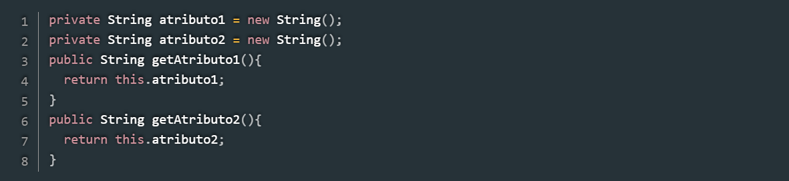
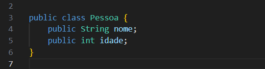
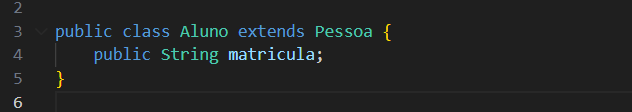
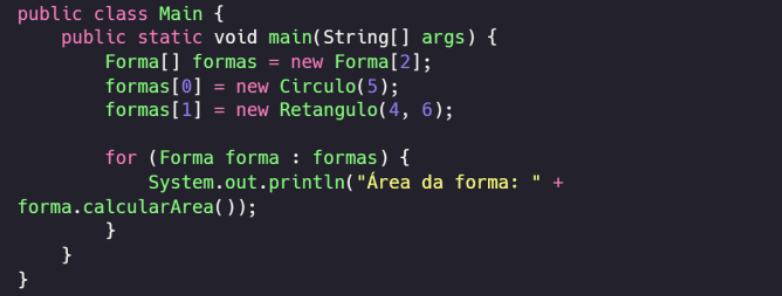
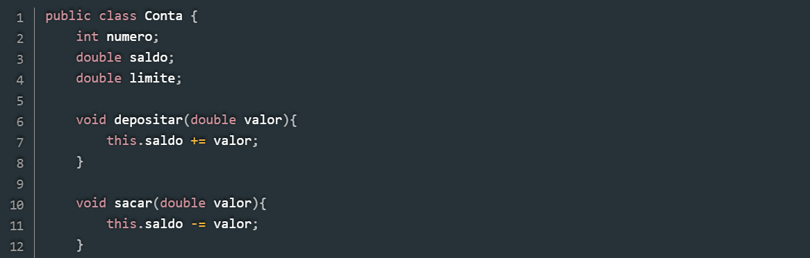

Encapsulamento
O encapsulamento se baseia na restrição de acesso aos atributos e métodos de uma classe através de alguns limitadores, que incluem: Público – é vista pelas classes dentro do mesmo pacote Protegida – acesso apenas a própria classe e suas subclasses Privado – acesso apenas pela própria classe
Herança
A herança se resume basicamente em herdar características de objetos que estão acima na hierarquia. Por exemplo, uma criança herda as características dos seus pais e, seus pais herdam características dos seus avós, a herança de um objeto que está logo acima é considerada direta, enquanto as outras são indiretas
 Polimorfismo
O polimorfismo é a forma como um método é aplicado, logo, ele pode possuir várias implementações. Como um exemplo, existe um objeto “Eletrônicos”, que possui o método “Ligar()”. Existem mais 2 objetos, “Televisão” e “Videogame”, que não vão ser ligados da mesma maneira, ou seja, o método ligar vai ter uma diferente aplicação para cada um deles
Abstração
A abstração é basicamente a identificação das características e comportamentos principais de um objeto, então, ele acaba ignorando alguns detalhes irrelevantes. Como exemplo, temos um carro quebrado que é levado a uma oficina e depois de um tempo ele volta funcionando. Em resumo, os detalhes do conserto não importam, o que importa é que ele voltou funcionando
